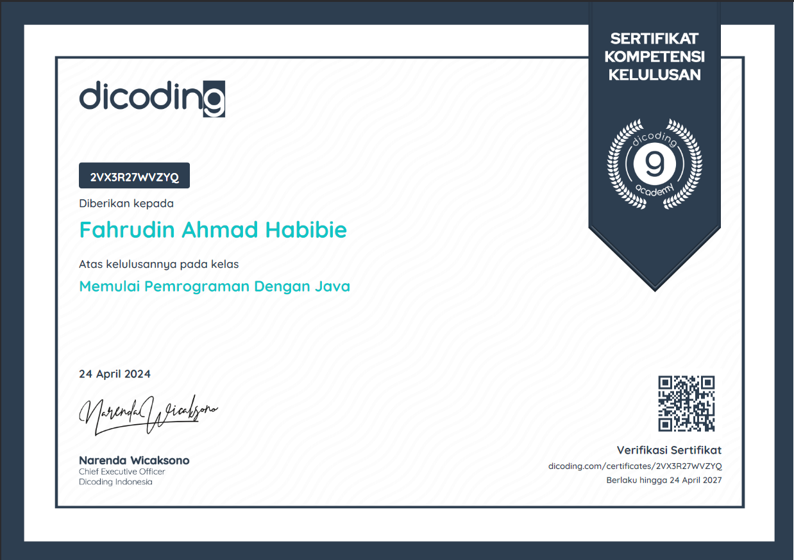

Fahrudin Ahmad Habibie
Informatics Engineering
Always give thanks for what Allah Subhanahu wa'taala has given you.
Work Experience
Studying at – University Surakarta
Jan 2023 – PresentStudying at Surakarta University, majoring in Information Engineering because I like programming and it is also related to electronics, which was my previous field of study.
Attended high school in – SMKN 5 Surakarta
Jan 2020 – Dec 2023Previously attended vocational school in industrial electronics, which involved programming plc, arduino, making pcb circuits and something about IoT etc.
Electrical Engineering – The Fit Company
Jun 2021 – Sep 2021Have had practical work at a computer repair place
Training and Certification
Dicoding
Jan 2020 – Dec 2023Previously attended vocational school in industrial electronics, which involved programming plc, arduino, making pcb circuits and something about IoT etc.
Education
Bina Nusantara University
Master's Degree, Information Technology
GPA 3.8 / 2020 - 2022
Sebelas Maret University
Bachelor's Degree, Informatics
GPA 3.7 / 2015 - 2019